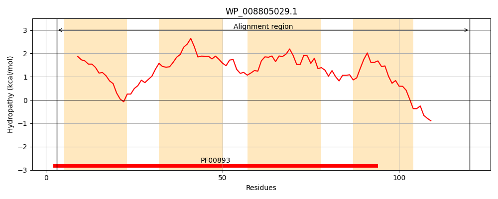
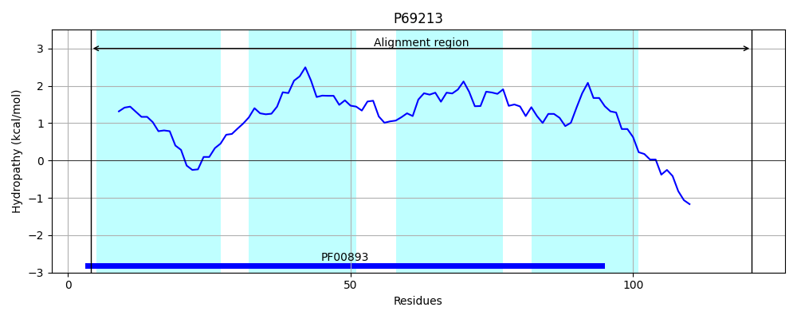
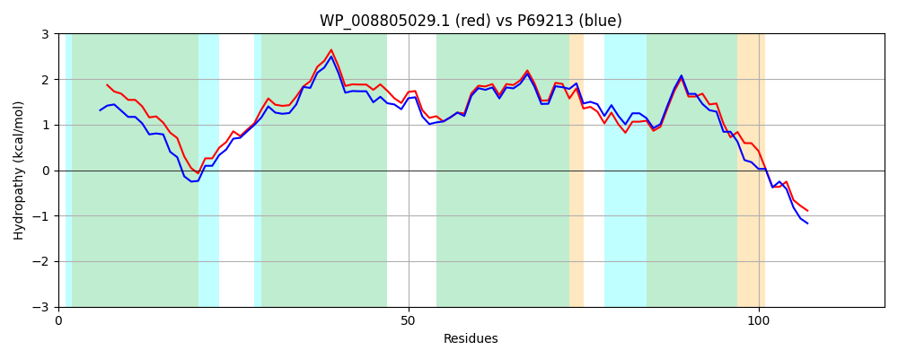

Hit Accession: P69213
Hit TCID: 2.A.7.1.9
Hit Description: gnl|BL_ORD_ID|11257 gnl|TC-DB|P69213|2.A.7.1.9 Spermidine export protein mdtJ OS=Escherichia coli O157:H7 GN=mdtJ PE=3 SV=1
Mach Len: 118
e:0.000000
Query TMS Count : 4
Hit TMS Count: 4
TMS-Overlap Score: 3.600000
Predicted Substrates:CHEBI:8984;sodium dodecyl sulfate, CHEBI:23614;deoxycholate, CHEBI:9218;spermidine
BLAST Alignment:
| Protein Hydropathy Plots: | |
|---|---|
|  |  |
Pairwise Alignment-Hydropathy Plot: | |
|  | |